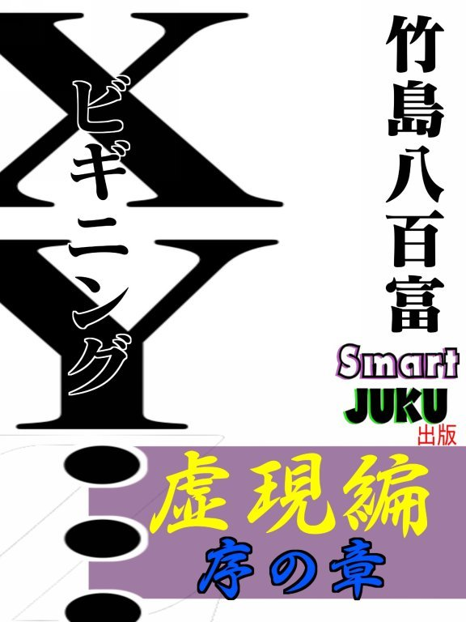

| ＸＹ・・・ビギニング 虚現編 序の章 (奇談屋書店) | |
| 竹島八百富 | |
| Smart JUKU (2017) | |

A ROCK & ROLL FABLE. ANOTHER TIME, ANOTHER PLACE...
この物語には奇妙なキャラクターが多数登場します。しかも、多くの謎が貴方を惑わすことでしょう。漠然としている情景に少しずつ色付けするのが、貴方の役目です。
この物語が、いつ、どこで起きたことなのか、そんなことは重要ではありません。不思議な世界を堪能しながら、貴方の頭の中でイメージしてくれさえすればいいのです。
では、お楽しみ下さい。
Ｘ・Ｙ...ビギニング
虚現 編
序の章
「痛い！」
ティーガーは突然吹き飛ばされるように地面に仰向けに倒れた。まるで、後ろから誰かに投げ飛ばされたような様だった。それは、見えない何者かから攻撃を受けたような衝撃だった。
周りにいた仲間たちも驚いてティーガーに注目した。
「どうした？」
「何が起きた？」
突然のことで合点のいかない仲間たち。それぞれが手にしていた草や種を放り出して、急いでティーガーの元に駆け寄った。
「ティーガー、どうしたんだい？ 突然......」
地面に伏せているティーガーに最初に声を掛けたのは、彼女の居候先の年老いたアリソンだった。アリソンはティーガーのことを、まるで本当の娘のように愛していた。
「分かりません。ただ、突然、凄い勢いで胸を押されたような......、気が付いたら地面に......」
アリソンたちはティーガーと違ってほとんど表情がないので、自分の心配をどれほどしてくれているかは、ティーガー本人には計り知れなかった。
「あなたは、昔から突然の痛みやキズが起きたりするから、本当に心配よ」
「ごめんなさい」
「あなたが謝ることじゃないわ、もしかしたら病気かも知れないしね」
仲間たちも心配そうにティーガーの周りに集まり、クンクンと鼻を鳴らした。
「あなたは休んでなさい。もう、秋も終わりそうだから、急いで冬支度をしなくちゃいけないからね」
「はい。すみません」
＊
「さあ、みんな、今日の分はここまでにして続きは、また明日行おう！」
一行は、このコミュニティのリーダーのラッセルの言葉で作業を終えることになった。それぞれが今日の取り分を袋に詰めて帰途に就き始めた。
横になって休んでいたティーガーも体を起こそうとした。
「ティーガー、無理しないで、私の背中に乗りなさい」
「そんな、大丈夫です」
「いいえ、ダメよ。冬支度はまだまだこれからなのよ。今倒れられちゃ困るから。今日は無理せず、私の言う通りにして」
そう言って、アリソンはティーガーに背中を向けた。
「分かりました。ごめんなさい」
ティーガーは申し訳なさそうに、丸々としたアリソンの背中にしがみついた。
「まあ、軽いこと。本当に乗っているの？」
アリソンは冗談交じりにクスッと微笑んだ。ティーガーほどの重さでは、むしろ物足りなさそうな様子だった。
それに応えて、ティーガーも微笑み、アリソンのフカフカした背中に体を委ねた。いつからか、自分を本当の子どものように育ててくれたアリソンは、自分にとって母親のような存在だった。ここまでくるのに何度恐ろしい目に遭ったことか......。思い返せば、大変なことばかりだった。アリソンに助けられたことに心から感謝している。このままずっとこの生活が続くことができればどんなに幸せなことだろう。しかし、時折不安になるのは、自分の体だ。覚えのないキズ、突然の痛み、先ほどのような目に見えない者からの攻撃のような感触、いったい自分の体はどうなっているんだろう？ アリソンの背中で揺れながら、ティーガーは幸せと不安を交差させていた。
＊
一行は、洞穴のような場所にたどり着いた。ここが彼らのコミュニティだ。そして、各自それぞれの部屋に別れた。
アリソンとティーガーも、住み慣れた暗い住処に戻ってきた。
ティーガーは、アリソンの背中から下り、草で編んだベッドに横たわった。
「大丈夫かい？」
アリソンは心配そうにティーガーを見下ろした。
ティーガーは、優しく微笑み返した。
「はい、大丈夫です。本当にごめんなさい」
「心配しないで、今日は、このままおやすみ」
「はい」
ティーガーは今までの人生で最も安楽の時間を過ごせていると実感した。そして、そっと目を閉じた。
＊
翌日もティーガーの様子は芳しくなかった。むしろ悪化していた。ベッドに横たわったティーガーの姿は痛々しくもあった。何の前触れもなく突然起きた痛み、綺麗なはずの白い背中は赤く腫れ上がっていた。
アリソンは、リーダーのラッセルを中心とした長老たちに相談を持ち掛けた。
長老たちはアリソンの家に集まり、横になっているティーガーを囲んで口々に意見を述べた。
「なんと痛々しい」
「かわいそうに......」
「あぁ、見るのも辛い」
「ティーガーが病気なのか、どうかは、我々に判断できん」
「いったい、どうすれば？」
一人の長老が口にした
「ドクター・ポールのところへ行くしか......」
皆が黙って頷いた。
「確かに、それが最善なのだろうが......、果たしてドクター・ポールが診てくれるかのぉ？」
「同じ人間なんだから、診てくれるだろう」
「あぁ、あの人は口も堅いし、唯一信用できる人間だからなぁ」
「しかし、どうやってティーガーを運ぶんだ？ 境界を越えんといかんのに」
「私の背中に乗せて行くわ」
アリソンは声を張り上げた。
「ダメだ、この様子じゃ、境界まで背中にしがみつくのは無理だろう。仮に境界を越えたとしても、ドクター・ポールの家までもかなりの距離がある」
「じゃあ、どうすればいいのよ！」
リーダーのラッセルが答えを出した。
「私がドクター・ポールの元へ行き、彼をここに連れてこよう」
「ドクター・ポールを？」
「それしかないだろう」
苦渋の決断だった。
「では、私も一緒に行こう」
別の長老が志願した。
「いや、行くまでには多くの捕食者がいるはずだ。私だけの方が動きやすい。二日経って私が帰って来なかったら、あなたに行ってもらおう」
「分かった、そうしよう。くれぐれも気を付けてくれ」
「ああ」
議論は続いた。
「しかし、ドクター・ポールがここに来てくれる保証はあるのか？」
「事情を話せば、彼は分ってくれるはずだ、同じ人間を見放すことはないだろう」
「いや、来る、来ない、ではなく、ドクター・ポールが境界を越えられるかが問題だと思うんだ」
「そうだな」
「でも、昔は境界を越える人間がいたと聞いている」
「昔はな」
「まあ、落ち着くんだ。越えられないときは、また、そこで考えよう。今は、そんなことを議論していてもしょうがない」
長老たちはラッセルの言葉に一様に頷き、議論は終わりを迎えた。
「ラッセル、ありがとう。本当に、ありがとう」
アリソンはラッセルの顔に自分の顔を寄せた。
彼らには表情はないが、お互いの心の中は伝わっているようだった。
かくして、コミュニティのリーダーのラッセルは孤軍で境界を越え、ドクター・ポールの元へ行くことになった。
一人のいたいけな少女ティーガーを助けるために！
＊
ラッセルは袋いっぱいに食料を詰め、すぐさまコミュニティを発つことにした。
＊
境界までは、丸一日掛かるであろう。時折、木陰で休み、栄養を取りながら......、そして、何よりも空からの捕食者どもに捕らわれることのないよう、視界を遮る陰に入りながら細心の注意を払って進まなければならない。
長い時間走り続けた。すでに日は沈み始め、夕闇が覆おうとしている。暗くなれば、また別の捕食者が現われる。今度の奴らは自分と同じ目線で襲ってくる。空からの捕食者から逃れるように木の陰に隠れるという訳にはいかない。見つかれば、とても逃げ切れない速さで追いかけてくるであろう。
とにかく見つからないよう、音を立てずに走り続けるしかない。ここでは逃げ切る方法を考えるより、見つからない手段を選択する方が賢明だ。
ラッセルは音が立ちにくい足場を選びながら、足を進めた。
やがて、漆黒の暗闇の先に白い靄が見えた。いよいよ境界だ。
「気を抜くな！」
ラッセルは自分に言い聞かせて、疲れている自分を奮い立たせた。
＊
目前まで近づくと、靄は輝きを増していた。
それはもはや単なる靄なんかではない、一つの輝きある光の輪となっている。
長老の中でも、ここまで来た者は少ない。まして、境界を越えた者は皆無だ。今のコミュニティで境界を越えたことがあるのは、ラッセルだけだった。
ラッセルはしばらくその神々しい輪を眺めていた。ここに来たのはいつぶりであろう。まだ、自分が幼い頃、父と来て以来だった。
そのころ、父マーティンがこのコミュニティのリーダーであった。父はいつかリーダーの座を息子に譲ることを決めていた。そのため、ラッセルにリーダーとしての帝王学を学ばせていたのだ。そして、この境界の場所と意味も教えていた。そして、境界の向こうの世界を体験し、ドクター・ポールの存在も知った。
ドクター・ポールは、コミュニティの中でも出会った者はおらず、伝説の人間となっている。ただ、多くの知恵という財産をラッセルの父に与え、それが今ではコミュニティに活かされているのだ。
ラッセルたちのコミュニティは文字を持たない。なので、ドクター・ポールからの知恵はラッセルの父からの伝承となって受け継がれている。
＊
ラッセルがまだ幼かったころ、ドクター・ポールは彼にこう言った。
『坊や、困ったことがあれば、遠慮無くここに来るといい、お互いに助け合って生きていこう』
＊
今、ティーガーという一人に少女が苦しんでいる。決して自分のためではない......しかし、苦しんでいる者を助けることが自分たちにとっての責務なのだ。
そうやって、知恵を授かり発展していくのだ。
＊
翌朝早く、ラッセルはドクター・ポールの家の前にいた。まだ、陽が完全に上りきっていない。思ったより早く着いた。まだドクター・ポールは眠っていることだろう。しかし、一刻も早くティーガーの元へ、彼を連れていかなくてはならない。
ラッセルは壁をよじ登った。ドクター・ポールは、一階が診療所で二階が自宅と言っていた。
窓ガラス越しにドクター・ポールが横になっているのが見えた。
ビンゴ！
そして、寝室の窓ガラスを叩いた。
人があふれかえっているバザール。
真っ直ぐ歩くこともままならず、人の波に合わせて、右に寄ったり、左に寄ったり......買い物をするという本来の目的を忘れ、まるで人々はこのバザールを無事抜け出すことを目的のようにしていた。
しかし、その波に逆らって自分の進むべき道を選び、人を押しのけていく者がいた。季節外れのトレンチコートを羽織った彼は両手で人波の中を平泳ぎのようにかき分けるように進んだ。時折、後ろを振り返り、人食い鮫の恐怖から逃げるように進んでいた。
彼が時折振り返るその視線の先には、人食い鮫役の黒づくめの大男二人がいた。まるで映画に登場する悪役そのものの姿だった。
間違いなく、トレンチコートはこの二人組に追いかけられ、必死で逃げているようだ。
そして、上空にはその光景を捉えている目があった。一台のドローンだ。
ドローンの目は逃げる男をしっかり捉えている。
しかし、彼はドローンの存在などには気が付いていない。
メインの道から右の脇道に入った。
＊
ドローンから送られる映像をモニターで眺めている悪徳顔の男は、周りにいる三人の男たちに指示を出した。
「南側の出口に回れ！」
男たちは、無言のまま持ち場に向かった。
＊
相変わらず、もみくちゃにされながら、トレンチコートは前に進んだ。途中にある店に飛び込むこともできるだろうが、もちろん店主からの抵抗も考えられる。その時間的ロスを考えれば、まずはこの人混みを抜け、適当な車に飛び乗った方が賢明であろう。
とにかく後ろの大男二人には捕まりたくはない。奴らの体格では、あばら骨や顎の骨を砕くことなどたわいないだろう。どうせ捕まるなら、もう少し知性と理性のある者に捕まりたいものだ。
そう思ったときだ。トレンチコートは足を止めた。
目の前に男三人が現われ、道を塞いだ。
万事休す！
トレンチコートは、息を荒げて、前と後ろを交互に見た。
前には少しは理性のありそうな男が三人。
後ろには、一切の妥協を許しそうもない獣のような男が二人。
大きくため息をつき、前方に向って、両手を挙げた。
後ろから野獣二人が近づく。もう抵抗は止めよう。できることなら、どこの骨も折られないように努めることにした。
大男の一人が難なく、彼のコートの襟を引っ張り上げた。
トレンチコートは、サンドバッグのように宙に浮いた。
前三人が近づいてくる。ニヤけた顔に勝利が溢れている。
悔しいが、自分の負けだと悟った。
そして、目の前にいる三人の少し後ろから、スーツ姿の悪徳顔の男が口を尖らせたまま現われた。
コイツがこの連中のリーダー、あまりの分かり安さに、彼は宙に浮かびながら、その男に向って、作り笑いを見せた。精一杯の強がりだ。
悪徳顔は宙に浮いているトレンチコートの目の前まで来て、見上げて言った。
「俺たちが、なぜ君を追いかけ、なぜ君が逃げているか、よく分かっているはずだ」
「もちろんだ、アンタたちは、俺の研究の成果を横取りにきた。俺は、横取りされてなるものかと、逃げた。そういうことだろう？」
「あぁ、間違ってはいない」
「誰がどう考えても、悪いのはアンタたちだろ。俺は被害者だ」
「一つの側面を見ると、そうかも知れんな」
「他にどんな側面があるんだよ」
「まあ、ここではなんだから、場所を変えよう」
大男が手を放し、トレンチコートは地面に落ちた。立ち上がった彼を、今度は背中を押し歩かせた。
「痛ぇんだよ！」
トレンチコートが大男に文句を言っても怯む相手ではなかった。さらに押し続けた。
やがて、黒いバンが一行の前に止まった。
「黒づくめの悪そうなツラの連中に、黒いバンなんて、安物の冒険映画って感じだな、そのまんま過ぎて笑えるぜ。もう少し、悪人っぽくないように装ったらどうなんだ」
「お前の、冗談じみた強がりも、Ｂ級映画そのまんまだな」
悪徳顔は、トレンチコートに顔を近づけた。
「言っておくが、俺たちは悪者じゃないんだ。むしろ正義の味方だ」
「泥棒のくせに？」
「いいから乗れ」
トレンチコートは、大男二人に車の中に放り込まれた。
疲れ切った表情で中条豊、希美の老夫婦はホテルの部屋に戻ってきた。
「これだけ人が多いと、買い物もできんな」
「本当ですね」
「さっさと下のレストランで食事でもして休むとするか」
「そうですね」
二人は、服を着替え直し始めた。
階下のレストランに行くには最低限の物だけで十分なので、妻の希美は、お気に入りの赤いショルダーバッグからハンドバッグに中身を入れ替えようと、テーブルの上に物を出した。財布や携帯、ハンカチ、ハンドタオル、化粧品の入ったポーチなどを広げた。
すると、見知らぬマッチ箱のような物が......
「あら、これは何かしら？」
アルミ製のようなその小さなマッチ箱のような物は、一面だけがスマホのように液晶になっている。
「小型のスマホかしら？ でも、なんで私のバッグの中に？」
希美はそれを夫の豊に見せた。
「あなた、これ何かしら？」
「うん？」
豊はこの小さな箱を手に遠くなった目で、がんばってピントを合わせた。
「なんだ？ これ、スマホか？」
やはり同じ発想だった。
「さあ？」
「どうしたんだ？」
「さあ？ 知らない間に、私のバッグの中に入っていたんです」
「爆弾とかじゃないだろうな」
「やだ、そんな物騒なこと言わないでくださいよ」
「誰かに入れられたのかな？ 盗聴器とかじゃないか？」
「怖いですね」
「添乗員の岡田さんに訊いてみるか」
「そうですね」
＊
呼ばれた添乗員岡田が、すぐに二人の部屋にやって来た。
「実はね、私のバッグの中に、知らない間にこんな物が入っていたんですよ」
そう言って、小箱を手渡した。
岡田はそれを見回した。
「なんでしょうね？」
「もし、爆弾や盗聴器のような物だったら怖いと思って......」
「いやあ、ボクも初めて見ましたよ、こんな物」
あらためて見てもマッチ箱程度の大きさのそれは、最も大きい面の一つが液晶画面のようになっているだけで、その他は物理的特徴は見られない。ただ、細い面の一つに、内箱があるように切れ込みが見られる。
「なんか中から内箱が飛び出すのかな？ 切れ込みがあるようなんですが......」
「どうしましょう？」
「まあ、一旦ボクが預かっておきますよ」
「そうして下さい」
そして、岡田は箱を手にして二人の部屋から出ていった。
カツカツとガラスが鳴る音に、ドクター・ポールは目を覚ました。
「いったい、何事だ？ 何の音だ？」
眠そうな目をこすり、上半身を起こした。
寝ぼけた頭で音源を探す。窓からだ。しかし、窓には目に映るものは何もない。いつも通りの街の風景だけだ。それもまだ薄暗い。
小鳥が窓をつついたのだろうか？
もう一度シーツを被ろうと横になったとき、またカツカツを音がした。
「はっ？」
あらためて窓を見た。
なんてことだ！ 下部の窓枠に野ネズミがいるではないか！
「君か？ 君が窓を叩いたのか？」
野ネズミは首を縦に振った。
ドクターは窓を開けた。冷気が部屋に入り込む。左の手のひらを野ネズミの前に差し出した。
野ネズミは、難なくその手に乗った。
ドクターは、左手を気遣いながら、窓を閉め、ベッドに腰を降ろした。
「ドクター・ポール、私のことを覚えていらっしゃいますか？」
「はて、誰だったかな？」
「マーティンの息子、ラッセルです」
「おお、マーティンの！ 大きくなったなぁ。父上はどうしたんだ？」
「残念ながら......亡くなりました」
ラッセルは頭を垂れた。
「そうだったのか、お気の毒に......、ところで、今日はどうしたんだ？」
「実は、我々のコミュニティにティーガーという人間の女の子がいて、病気のようなのです。それであなたに助けてもらいたくて......」
ドクターは失笑した。
「そんなバカな、君たちのコミュニティに人間の女の子がいるなんて！」
「ドクター、冗談を言うために、命懸けでここまで来るようなことはしません。信じてください。我々は彼女を助けたいんです」
「本当なのか？」
ドクターは困惑して、驚きの表情でラッセルを見つめた。
それに対して、ラッセルは深く頷いた。
「で、その子はコミュニティにいるままなのか？ 連れてこられないのか？」
「無理です。ここに来るまでには、多くの捕食者もいます。とても彼女を連れて来ることなんてできません」
確かにラッセルの言う通りだ。野ネズミが人間を連れて来るなんてことは、想像することもできない。
「では、私に行け、と？」
「お願いします。人間のことは、人間であるドクター・ポールに頼むしか方法がないのです。そして、これが私たちの気持ちです」
ラッセルは袋（ドクターから見れば口）からたくさんの種を出した。
「あ、ありがとう。ありがたく頂戴しておくよ。その気持ちは嬉しいんだが......」
ドクターは顎を撫でながら考え込んだ。
「しかし、その境界とやらを越えなければならないんだよな」
「はい、その通りです」
「ところで、そこには私でも行けるものなか？」
自分たちの世界とラッセルたちの世界の境には、光の境界があることは、ラッセルの父マーティンから聞いていた。しかし、実際にそれを越えたこともなければ、そこに行ったことさえもない。
果たして、生身の人間が行ける場所なのであろうか？ ドクターには不安がこみ上げた。
「以前は人間も使っていたと聞いたことがあります」
「本当か？」
「はい」
「そこには空気はあるのかい？ 重力はこちらの世界と同じなのか？」
「クウキ？ ジュウリョク？ 何ですか、それは？」
野ネズミであるラッセルに物理の法則など分かるはずもなかった。
ドクターは頭を抱えた。
「分かるはずはないな」
しかし、命懸けでここまで来たラッセルの願いを無碍にすることはできない。
「君の世界と、こちらの世界で、何か体に異変はないかい？」
ドクターは質問の内容を変えてみた。
「いえ、特にはありません。むしろ、こちらの世界に来た方が息苦しさを感じます」
「......なるほど」
あらゆることを想定しようとしたが、未知の世界である、考えるだけ時間の無駄になることを悟った。
「分かった。行ってみることにしよう」
「ありがとうございます！」
「しかし、その少女が本当の人間なのか分らないし、手は尽くすつもりだが、本当の人間だとしても、そちらの世界の人間だ。私に救える保証はないぞ」
ラッセルはゆっくりと大きく頷いた。
＊
ドクターは、白衣に着替え、往診バッグを手に提げた。
「さあ、行くか」
白衣のポケットからはラッセルが顔を出している。
「道案内を頼むぞ」
「はい」
ドクターは、医院の扉にＣＬＯＳＥの看板を掛け、未知の世界に向って歩き出した。
＊
境界のある場所までは、驚くほど早く着いた。
そこは人が寄りつかないような茂った森の中だった。
野ネズミが命懸けでひと晩掛かって来た道のりをわずか数十分でたどり着いたのだ。
「僕はこの距離をひと晩掛けて来たというのに......」
「まあ、歩幅が違うからね、ところで、境界の光の輪はどこなんだい？」
「もう少し登ってください」
「分かった」
白衣のドクターが往診バッグを提げて、こんな茂った森の中を歩いていれば、不思議に思われるであろう......ドクター自身が滑稽に思えた。
そうして、慣れない山の斜面を登り続けた。
「これは、帰りが思いやられるな」
当然だが、行きがあれば帰りもあるのだ。ドクターはいささかうんざりしてきた。
安っぽい事務机を挟んで、トレンチコートと悪徳顔は向かい合っていた。
「まず、アンタたちは、何者なんだ？ なんで俺の研究成果を狙っているんだ？」
「君は勘違いしているようだが、決して我々は、君の思っているような悪の秘密結社でもなければ、危険な集団でもない。むしろ、平和を愛する側だと言っておこう」
「その平和を愛する集団が、あんなゴツいゴリラのような連中を雇って、平凡な研究員を襲おうとは、たまげたな」
「一切、暴力は振るっていないと思うが......」
「でもよ、どう見ても、悪者面だろ、お前たち全員」
悪徳顔は鼻で笑った。
「顔のことを責められても、どうしようない、親にもらった顔なんだからな」
「いいから、お前たちの正体をまず教えろ！ で、俺に何をするつもりなんだ！」
「我々は、ある国際組織とでも言っておこう」
「だから、その『ある』って部分が問題なんだよ！ 『ある』って何だよ！」
悪徳顔は疲れたように首を回した。
「サイド・キャビネットだ」
「サイド......キャビネット？ なんだよ、それ」
「この世界を、裏で動かしている国際的組織だ。要するに、真の世界平和を維持するために活動している組織だ。今、君に言えるのはここまでだ」
「で、その立派な組織がなんで俺を？」
「君の研究があまりに危険だから、それを阻止するために」
「危険？ 俺の研究の何を知っているって言うんだ？」
「すべて」
「すべて？」
「ああ、世界中のあらゆる国の全ての研究所の内容を我々は随時把握してきている。そして、過去の過ちを繰り返さないように監視しているんだ」
「そんなバカな」
「本当だ」
「だから君の研究を阻止しなければならない」
そう言って、右の手ひらをトレンチコートに差し出した。
「ロドニー君、出すんだ、君が作った物を！」
ロドニーと呼ばれた彼は、トレンチコートのポケットからゆっくりと両手を出そうとした。
「もし、拳銃が出てきたら、どうする？」
「この部屋は完全にロックされ、私ともどもガスで窒息死するかな」
「死ぬのが怖くない？」
「私の死など、取るに足らん。私たちの使命は今の人類を永続させることだ」
ロドニーは、頭を振った。
「狂ってるな」
「さあ、出すんだ」
ロドニーは、ホールドアップして手のひらを見せた。
「残念、持っていないんだ」
「どこに隠した？」
「さあ」
ロドニーは肩をすくめた。
「まだ事の重大さが分かっていないようだな」
「バザールで逃げている途中で落としちまったかな、なにせ人が多くて、逃げるのもひと苦労だったからな」
悪徳顔はため息をついた。
「なんてことだ......」
そのとき、ホールドアップしているロドニーの左手の腕時計がバイブ音を立てた。
「もう一つ、残念な報告がある」
「なんだ」
ロドニーは腕時計の面を悪徳顔に向けた。
その面には、Ｘ...Ｙ...Ｚと、ひと文字ずつが順番に映し出された。
「もう手遅れだ。たった今作動した。誰かがスイッチを入れちまったようだ」
悪徳顔はうなだれた。
「これで、イヤでも、君に協力してもらうことになったな」
「断わったら？」
「断わることはできないはずだ」
「ほう、なぜ？」
「今から、ある場所に連れていき、そこで見せたいものがある。それを見たら、自分の愚かさに気付くだろう。今日はもう遅い、明日出掛けよう。心配しなくてもいい、君のためにベッドも食事も用意してある。研究所の安っぽいものとは違うぞ」
一本の大きな樫の木の元へ来た。
「ここです」
ドクターは辺りを見回した。
「境界とはどこなんだ？」
「下ろしてください、案内します」
ドクターはラッセルをその場に下ろした。
「こちらです」
ラッセルは木の根元の直径十五センチほどの小さな穴に向かった。
これはウサギの巣か？
ドクターは首を振りながら、自分の体がそこに入るのは無理だと悟った。
「おい、ラッセル、さすがに私には、この小さな穴に入ることは無理だぞ」
ラッセルは肩を落とした。
「やはりダメですか......。以前は人間が出入りしていた、と聞いていましたが......」
「それは本当か？」
ドクターは、腰を降ろし懐中電灯で穴の中を覗いた。
しかし、そこは思った以上に空間が広そうだった。入口を広げればなんとか入れるかも知れない。
「いや、ちょっと待て、穴を広げてみよう」
腐った落ち葉が重なる地に両膝をつけ、ドクターは両手で穴を広げ始めた。何年ぶりかの土の感触を味わいながら、必死で穴を広げた。
その横でラッセルも僅かばかりの手助けをする。
＊
十分ほど掘り続け、入口部分は頭と両肩が入るほど広がった。
「よし、これならなんとか入れそうだ」
ドクターは両手の泥を叩き落とし、往診バッグを穴に放り込んだ。
口に懐中電灯を咥え、そして、両脚を穴へ入れ、ズルズルと奥へ沈み込んだ。
中に入ると、恐ろしく広い空間が広がっていた。それは間違いなく人工物だ。自然でできた物ではない。タイルのような細かい石版で覆われた壁、ゴシック風の石細工、かつての中世の時代に人間によって使われていたことに間違いない場所だった。
「ここは！」
疑問よりも驚きが先に出た。
「ラッセル、ここはいったい、なんだ？」
「言い伝えによると、テンプルキシダンという集団の秘密の会議場と聞いたが、さっぱりなんのことなのか、僕らには分りません」
ドクターは懐中電灯で照らしながら、その凄さに圧倒されていた。
「テンプル騎士団......なんてこった！ ここに彼らがいたのか！」
「ドクター・ポール、感傷に浸りたいお気持ちは分りますが、ティーガーが待っています。急ぎましょう」
「そうだな」
この場所の位置も分かったことだ。テンプル騎士団についての調査は後日に回すことにした。
ラッセルとドクターは、さらに奥に進んだ。
ラッセルは迷うことなくチョコチョコと進み、時折、立ち止まっては後ろを振り返る。
その姿を照らしながらドクターは慎重に進んだ。
洞窟の中は迷路のようになっており、無数に道が分かれている。もし、ここに滞在中に敵に見つかったとき、敵をまくために、わざとこのような設計をしたのであろう。果たして、無事に地上に出られるだろうか、ドクターは不安が膨らんだ。
やがてラッセルは小さな穴のような場所の前で立ち止まった。
「こちらです」
懐中電灯を照らす。そこは壁の下部が無造作に壊されたようにも見えた。直径五十センチほどの穴がぽっかりと空いているのだ。
「狭そうだな」
野ネズミのラッセルにとってみれば、巨大な洞窟でも人間にとっては、とてつもない恐怖が覆い尽くすような穴だ。閉所恐怖症の者なら、間違いなく恐怖のあまり縮み上がるはずだ。おまけにドクターは探検家でもなければ冒険家でもない。もしここで体の身動きが取れなくなっても助けられることはないだろう。仮にラッセルが助けを求めるために、こちらの世界に来ても、それを自分以外の人間に伝えることはできない。
穴の前でためらっていると、ラッセルに催促された。
「大丈夫です。もう目の前です。テンプルキシダンの人間たちもここを利用してのですから」
「本当か？」
「ええ。そのように聞いています。そもそも我々が作れる代物ではありません。あなたたち人間が作ったものなのですから」
ドクターは何度も頷き、意を決したようにしゃがみ込んだ。
「分かった。行ってみよう」
ドクターは口に懐中電灯を咥え、ネクタイを外し、端を足首に巻き、もう一方の端を往診バッグの手提げ部分に巻いた。
そして、地面を這い出し穴の中へ進んだ。
五分ほど匍匐前進のように進んでいくと、前方に光が漏れているのが見えた。
「あれが境界の光の輪？」
「そうです。あの中に入っていくんです」
しかし、その光源は、わずか数センチほどではないか！ 野ネズミ一匹がかろうじて通れるほどの穴。ドクターは、今度こそ無理だ、と諦めた。
「ラッセル、君の体のサイズでも窮屈そうなのに、私にあの穴は無理だぞ」
「いえ、ご心配なく、あの光はほんの一部ですから」
頭を振りたいところだが、それさえもできない洞窟の中、ため息でストレスを発散するしかなかった。
「いったい、どういうことだ？」
しかし、間もなくラッセルの言っていることの意味が分った。
その光源は、板の隙間から漏れているものだったのだ。
「これは......板で塞いであるんだ」
野ネズミのラッセルは、穴を塞いでいる板の隙間から出入りしていたのだ。
その板は、かなり年季が入っているようで、人の手で壊すには十分な脆弱さだった。
ドクターは穴を塞いでいる板をバリバリと割り始めた。
這いつくばったままの状態でも、弱い板は簡単に割れていく。どんどん光があふれ出し、暗かった洞窟に充分過ぎる輝きを与えた。そして、塞いで板を取り除くと、その場で立ち上がることができるほどのスペースもでき、泥だらけになった白衣を叩きながら、目を細めながら、立ち上がった。
「なんてこった！」
今度は逆に眩しすぎるほどの光で顔を思わず手で覆った。
「これが境界の光の輪です」
直径二メートル以上もありそうな神々しい光が円を描いている。それはまるで光が物質化したように飛び散っているようにも見える。まるで光を物質として触れるようだった。
ドクターにとっては、物理の法則を根底から覆すような体験だった。息を飲むとは、正にこういう状態を言うのであろう。彼は、呼吸をすることさえ忘れていた。
その光の円盤の向こうは何も見えない。ただ、光のシャワーが飛び跳ねている。
「さあ、行きましょう。ドクター・ポール」
「あっ、ああ......」
洞窟に入るときのためらいとは内容が違っていた。洞窟に入るときは、恐怖と不安が心を占めていたが、この崇高な光の輪の中に入るには、自分のような者が足を踏み入れることが、畏れ多いという憐れみの気持ちだった。
ラッセルが光の輪に飛び込んだ。
ドクター・ポールも、大きく息を吸い込んでから、光の輪の中に溶け込んだ。
中条夫妻の部屋のドアがノックされた。
夫妻はレストランで食事を済ませ、唯一の日本語局の番組をテレビで観ていたところだった。
夫の豊が、ドアを開けると、添乗員の岡田がいた。
「こんばんは、突然、すみません。中条さん、さきほどの箱の件なのですが......」
「はあ、何か分りましたか？」
「ええ、ちょっと」
豊は岡田を部屋に招き入れた。
三人はテーブルを囲み、ソファに腰を降ろした。
岡田は、テーブルに先ほど預かった小さな箱を置いた。見た様子では何も変わったところはなさそうだった。
「実は、画面と思われる部分を色々触ってみたんです。そうしたら、突然、内箱が数ミリほど上がってきて、そのまま引き出したら、抜けたんですよ。正にマッチ箱のような作りになっていました」
「で、中身は？」
「ご安心ください。爆弾も、盗聴器もありませんでした。箱の中にはこれが入っていたんです」
そう言うと、岡田は手で握っていたものをテーブルに置いた。それは白く小さな楕円形の物質だった。
「なんですか、これは？」
「分りません。見たところ、植物の種のようななんですが......」
「種？」
豊がそれを手に取って眺め回した。言われた通り、種のような物だった。
「レモンの種みたいだな」
「確かに、そのようにも見えますね」
「まさか、麻薬とか大麻とか、そんな危険なものではありませんよね」
希美が不安そうに尋ねた。
「いいえ、そういうものとは、まったく異なります。ご安心ください」
「バザールの人混みの中で、入れられたのか、入ってしまったのか、どちらかだろうなあ」
豊は腕を組んだ。
「さて、物騒だから捨ててしまうか、う～ん、どうしたものかな？」
「そうですね、添乗員の立場から申し上げますと、空港で引っかかる虞もありますし、安全が保証されたわけではないので、こっちで処分された方が賢明かと思います」
「そうだなあ、変なもの持ったまま空港で拘束されてもマズいし、せっかくの旅行が台無しになってしまうしなあ」
「ただ、ひとつ気掛かりなのが......」
中条夫妻が岡田に注目した。
「もし、これが何らかの事情で奥様のバッグに、故意に入れられたものとすると、入れた者が取り返しに来ないか、という心配です」
「でも、なぜ私の？」
「理由は分りませんが、ここでは東洋人は少なく目立つからかも知れません。人混みの中でも見分けやすい上、東洋人が宿泊しているホテルも限られています。あとで取り返しに来るには、適材なのかも知れませんね」
「怖いわ」
「まあ、無茶はしないでしょうし、もし、求められたら、抵抗せずに従えば問題はないでしょう」
「もし、来なかったら？」
「日本まで追いかけて来るんだろうか？」
「これの価値にもよりますね」
「岡田さん、どう思う？」
岡田は天を仰いで、しばし考え込んだ。
「先ほどの言葉を撤回しましょう」
夫妻は驚いた。
「添乗員としてはお勧めできませんが、一個人としてお二人の身の安全を思えば......という、前置きをさせてください。そして、このことはこの三人だけの話とさせていただくことをお約束していただけませんか」
岡田は自分の立場を強調した。
それに対して、夫妻はそろって頷いた。
「ここイスタンブールにいるのも、今晩の一泊のみです。明日の昼には、もう日本行きの飛行機に搭乗しています。仮に、その前に取り返しに来る者が来れば、素直に渡せば済むでしょう。しかし、来なかったら......、日本まで来る虞もあります。しかし、そこでこれが......」
岡田は種を手に見せた。
「これが、無いなんてことになれば、その腹いせに何をされるか分かりません。むしろ日本に持ち帰って、取り返しに来たときとしても、素直に抵抗なく、確実に渡した方が安心かも知れません」
「しかし、空港で......」
「まあ、これくらいの大きさのものなら、なんとでもなるでしょう。添乗員としてではなく、あくまでも一個人として、ですよ。種の方は、チョコなどの菓子類と一緒に入れてお持ち帰りください。そして、この箱の方には、マッチ棒を入れて、あたかも高級なマッチ箱としてお持ち帰りください。ご心配なく、特に危険なものではないので拘束されるようなことはありません。保証します。空港でお二人が搭乗するまで見守っていますから」
夫妻は互いの顔を見合った。
ロドニーは高級車の後部座席で項垂れていた。
＊
たった今知った人類の歴史の真実に自分の常識が覆されてしまったことに答えが出せないでいた。
＊
悪徳顔は、ロドニーの横に座り、彼の手を握った。
「分かってくれたかな、我々は、君が思っているような悪の組織なんかじゃない」
しかし、ロドニーは無言のままだった。
「君の発明は素晴らしい、しかし、我々人間は神ではない。越えてはならない領域があるのだということが分かってくれたはずだ」
「なぜ公表しないんだ？」
「公表すれば、自分も神になろうという者が、間違いなく現われる」
「俺は、別に神になろうとしたわけじゃない」
「ああ、分かっている。しかし、偶然の発見であろうが、偶然の成功であろうが、それが科学の力で可能であることが知られれば、同じことを繰り返そうとする者が必ず現われる。だから、そうなる前に我々が阻止するのだ」
「......」
「そして、もう一つ。君にとっては、残念な事実だが、君の行なった実験は、実は、もうすでに何人もの科学者が成功しているんだ。しかし、それらもすべて、我々が阻止してきたのだ」
ロドニーは横目で悪徳顔を睨み付けた。
「悔やしいかも知れないが、事実だ」
「で、どうすればいいんだ？」
「研究成果のありかを教えるんだ」
ふて腐れた顔でロドニーは言葉を発した。
「追いかけられていたときに、バザールで、東洋人の女性のバッグに入れた」
「東洋人？」
「ああ、ジャパニーズかチャイニーズかコリアンか、あいつらみんな同じ顔だから、どこの国の人間かは、分からない。肩に提げていた赤いショルダーバッグに突っ込んだ」
悪徳顔は大きくため息をついた。
「......骨の折れる仕事になりそうだ」
表情を変えてはいないが、悪態をつく悪徳顔だった。
光のシャワーを体中に浴び、《向こう側》に足を付けた。
ゆっくりと見渡す。青い空、輝く太陽（それが地球にとっての太陽かどうかは分からないが......）、白い雲、どこまでも続く草原、くつろぐのに最適な木陰を与えてくれそうな逞しい木、白、黄、赤などの色とりどりの花弁を持つ花々。完璧な風景だった。そよ風は心地良さもあるが、ときおり冷たさも感じる。冬が近いのであろうか。
ドクターは胸一杯に空気を吸い込んだ。
長い人生の中で、空気に味があることを初めて知った。空気が美味しいのだ。深呼吸の度に、体の中にエネルギーが増していく気がした。
「なんて素晴らしいんだ」
その言葉しか浮かばなかった......そこは余りにもパーフェクトな自然の風景なのだ。美しいという言葉では物足りない。感動すら覚える、この風景にドクターは完全に心を奪われた。
こここそが、ヘレン・ビアトリクス・ポターが思い描いていた世界かも知れない。もしかすれば、この世界の創造主は彼女かも知れない、とさえ思った。
「ドクター・ポール、どれだけ見ていても風景は変わりません。急ぎましょう」
「ああ、そうだったな」
ラッセルの言葉で我に返ったドクターは、往診バッグを抱きかかえ、ラッセルの後に付いていった。
＊
やがて小さな丘の麓に着いた。
なんてことだ！ 多くの野ネズミたちが、ドクター・ポールを出迎えてくれていたのだ。
ドクターが彼らの元に来ると、野ネズミたちは、一斉に彼の足元に集まりだした。
「ああ、ありがとう。でも、そんなに来てくれたら、踏んづけてしまうよ」
「ドクター・ポール、みんな、あなたが来てくれたことを喜んでいるのです」
ラッセルはドクターを讃えた。
「では、早速、その人間の女の子を診させてもらおうか」
「はい」
ラッセルは仲間にティーガーを運んで来るように指示した。
間もなく、一匹の野ネズミがドクターの前に通された。
「この子が、ティーガーよ」
運んできた野ネズミに付き添うように横にいたアリソンが言った。
「な、なんてこった！」
ドクターは、その様子を見て驚愕した。そして、慎重に腰を降ろした。
その背中には、四、五センチほどの人間の形をした何かが乗せられているのだ。
綺麗なピンクの布を身に纏った「それ」は、ミニチュア・ドールであろうと、ドクターは確信した。この野ネズミたちは、ドールを勘違いして本物の人間と思い込んでしまっているのだ。それに釣られて、この未知の世界に連れてこられてしまったのだ、と。
しかし、その思い込みは自分の方であることに、すぐに気が付いた。
なんと「それ」は、呼吸をしているのだ。胸が上下に動き、口から息遣いが聞こえる。その息継ぎは早く、いかにも具合が悪そうだった。小さな目は閉じられたままで、体中に汗が浮いているのも分った......小人？ 妖精？ 考えても、答えは出ない。しかし、野ネズミたちが「人間」というなら、その通りに従っておくことにした。
「ほ、本物の人間なのか......」
それでも、ドクターの口からは、思わず本音が出た。
野ネズミたちは一様にコクリと頷いた。
「私の娘のようなものなの、なんとか助けてあげて」
アリソンは懇願した。
ドクターは頭を振りながら、周りを囲む野ネズミたちを見下ろした。
「信じられない」
頭を抱えることしかできない。気持ちが整理できない。
「他に人間は？」
野ネズミたちは一斉に首を振った。
彼女が具合が悪いのは分かる。しかし、このサイズでは、聴診器も当てられない。普通の注射器で採血などすれば、それが致命傷になるであろう。まず、このティーガーなる子（？）を診ることは、自分の裁量なのであろうか、ドクターの脳裏に次々に疑問があふれ出した。
「いつからこの調子なんだ？」
「先日、冬支度をしている最中に......」
アリソンは説明を始めた。
「突然、体が吹き飛ぶように倒れたのよ」
「飛ぶように......倒れた？ きっと、背中を打ったんだな。せめてレントゲンでもあれば......」
ドクターはティーガーを見下ろしながら思案した。
すると、ティーガーの目がうっすらと開いた。その視線は、ドクターに向けられていた。
「あなたが、ドクター・ポール？」
「ああ、そうだよ」
「来てくれて、ありがとう......」
そう感謝を述べて、また気を失った。状態は良くなさそうだ。
この子が本当の人間であろうが、違っていようが、小人であろうが、妖精であろうが、今すぐ処置をしなければならないことは明確だった。
「ここでは、処置ができない、私の医院に運ぶ」
そのひと言で、野ネズミたちがざわついた。
「大丈夫だ。彼女が良くなったら、必ずここに連れて戻るから」
「分かりました」
ラッセルが許可を下した。
「ラッセル、君も付いてきてくれないか？ きっと君のその小さな手が必要な場面があるはずだ」
「分かりました」
今度は、同意の返事だった。
ドクターは、ラッセルを白衣のポケットに、ティーガーを生まれたての雛鳥を包むように、慎重に往診バッグの中に入れ、たった今来た道のりを引き返し始めた。
＊
ドクターは、午前中のうちに医院に戻った。こちらの世界に戻ってからは、ドクターの泥だらけの白衣姿を見た街行く人々から途中何度も声を掛けられた。
「どうした？」「事故でも遭ったのか？」「酔っ払ってドブに落ちたか？」
ドクターは、その度に苦笑いを返した。
＊
医院に戻ったドクターは、すぐにティーガーの体を（ラッセルの手伝いを受けながら）消毒液で拭き清潔にした。
そして、動物用の小型レントゲンを使って、診察台の上で写真を撮った。
できあがったレントゲン写真を見て、ドクターは唸った。
「この子は......」
ラッセルは、訳も分らずドクターの顔を眺めるだけだった。
Ｘ・Ｙ...ビギニング【虚現編】序の章
了
ご購読、誠にありがとうございました。
この作品は、あなたにとってどのような作品だったでしょうか。
お読みいただいたご感想をメール( ✉juku828910@gmail.com )にて頂けたら、幸いです。または、アマゾンでの率直な評価をお願い致します。
竹島八百富
著 竹島八百富
出 版 Smart JUKU
Amazon kindle本 で検索して下さい。
◎心理描写ミステリー
塾帰りの中学生が誘拐される事件が発生する。しかし、犯人からの電話は別の家庭に......。
同じころ、神奈川の山間部で顔面を潰された死体が見つかる。
果たして、二つの事件に関連はあるのか......。
顔面を破壊された被害者の身元が分かった。
その報道を見て、何かのほころびを感じる土産物屋で働く女性。
徐々に登場人物一人一人の内面が露わになる。果たして、事件の真相は？誘拐事件と殺人事件に関連はあるのか？
読み終わった後に虚脱感を味わって下さい。
※※※※※※※※※※※
小中学生をお子様に持つ方必読です。
竹島八百富 著書
◎短編集
アメージング・クリスマス・テラー（クリスマス期間限定出版）
『奇談屋の本』其の壱
『奇談屋の本』其の弐
『奇談屋の本』其の惨
『独り雛２０１４』
『Ｘメン・日本』（群雛文庫）
◎長編ホラー
Amazon kindle本 で検索して下さい。
☆実用書☆
アマゾ ン kindl e エンタメ部門で１位を獲得！
（著者：OHANA chan）
アマゾ ン kindl e エンタメ部門で４位を獲得！
（著者：OHANA chan）
（著者：Esnes Uoti）
（著者：ライタ）
（著者：夏 目 SA W 石）
行ってよかった！『桃太郎公園』
（著者：she.w）
行ってよかった！『奥殿陣屋』
（著者：she.w）
行ってよかった！『エクストラコールドＢＡＲと名古屋栄』
（著者：she.w）
（著者：take800）
『気をつけて！熱中症！』
（著者：Orochi）
『そうだ！船舶免許をとろう！』一巻～十一巻
（著者：take800）
Amazon kindle本 で検索して下さい。
☆中学生向けテスト模試問題集☆５教科対策シリーズ
☆中学生向き１００問１００円問題集☆
☆上位者の英語☆
☆高校入試直前☆
☆大学受験用 高校総合ビルダー☆
表紙デザイン 藤笑伊周
出 版 Smart JUKU